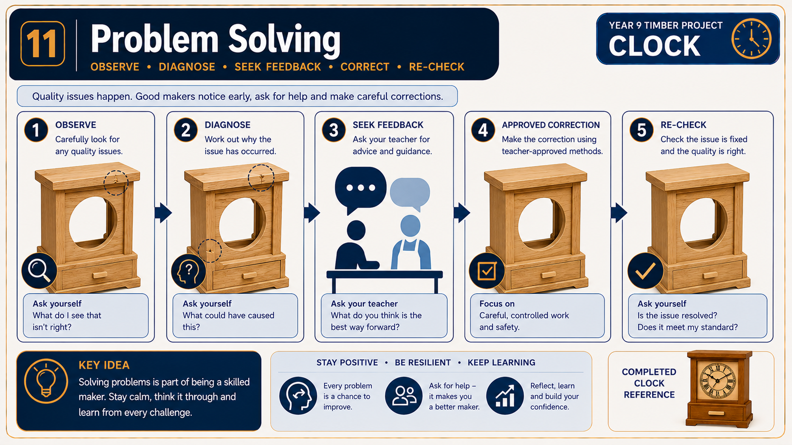

Module presentation
Learn with the slides
Use the presentation to preview Hidden drawer, off-cuts and fault diagnosis, then work through the theory, checks and written evidence below.
Project plan and evidence
Use the plan and save evidence
Use the supplied Clock project plan alongside the module, then open the folio when your evidence is ready.
Your work
Student details
Your entries save automatically in this browser. Use Download evidence PDF before leaving the page.
Weeks 9-10
This module
Use a suitable off-cut, build the hidden drawer and diagnose fit before making any teacher-approved correction.
Theory 1
The hidden drawer: accuracy, clearance and fit

The hidden drawer adds function and interest to the Clock, but it will only work well if its components are accurately prepared and assembled. Because the drawer is made from off-cuts, each piece must still be checked against the Clock drawing and the teacher-approved cutting list. An off-cut is useful only when it is suitable in size, condition and grain direction for the intended component. Do not assign a measurement to a drawer part by guessing or scaling the drawing. Trace the required information from the written dimensions and confirm any unclear detail with your teacher.
Drawer components should be checked before assembly. Matching parts need consistent length, edges should be straight, and mating surfaces should meet without obvious gaps. Small inaccuracies can combine during assembly and cause the drawer to twist, bind or sit unevenly. A square drawer is important because its sides must remain parallel as it moves within the Clock. Check the assembly from reliable reference faces and use the approved checking method demonstrated by your teacher.
Clearance is the small space that allows the drawer to move without scraping or becoming jammed. Clearance must be consistent rather than excessive. Too little clearance may stop smooth movement, particularly if timber changes slightly with moisture. Too much clearance may allow the drawer to wobble, tilt or appear poorly fitted. The correct fit should be judged against the drawing, the prepared Clock opening and teacher direction rather than an invented measurement.
Use this quality-checking process before the drawer is accepted:
- Confirm each component against the drawing and approved cutting list.
- Check that matching parts are consistent and reference edges are clearly understood.
- Dry fit the components and inspect the corners, diagonals and overall squareness.
- Test the drawer in its intended position under teacher direction.
- Look for rubbing, rocking, uneven gaps or a front that does not align visually with the Clock.
- Correct the cause of a poor fit before final assembly or finishing.
A functional drawer should move smoothly without being forced, remain supported in its opening and sit neatly when closed. Its visible edges and faces should align with the surrounding Clock surfaces. These checks connect directly to the project’s quality criteria: accurate construction, effective use of material and a final product that works as intended.
Theory 2
Responsible material use and off-cut selection

The hidden drawer gives suitable timber off-cuts a useful purpose instead of treating them automatically as waste. An off-cut is a piece left after another component has been prepared. Reusing it can reduce the amount of new material required and make better use of the timber already available in the workshop. However, responsible use does not mean using every scrap. The material must still be suitable for an accurate, stable and functional drawer.
Begin by checking the approved Clock drawing, cutting list and any teacher-approved project information. These documents determine the required component sizes. Do not estimate a drawer part by looking only at the space inside the Clock or by scaling the drawing. An off-cut is large enough only when it can contain the required component, including any allowance specified in the approved cutting information. If the required information is unclear, confirm it with the teacher before marking or cutting.
The condition of the off-cut is just as important as its size. Inspect the full piece rather than focusing only on one clear-looking area. Grain direction may affect how the timber behaves during preparation and how the finished component appears. Knots, checks, splits, warping, damaged edges or other defects may weaken the part, interfere with accurate marking or prevent the drawer from fitting correctly. Some natural features may be acceptable, while others may make the piece unsuitable. This judgement must follow teacher direction and the school’s normal material-selection procedures.
A useful off-cut selection process is:
- identify the drawer component and confirm its required size from approved documents;
- check that the off-cut provides enough sound material for the whole component;
- inspect its faces, edges, grain and overall stability for defects or distortion;
- consider whether the component can be positioned without wasting a larger useful section;
- show the proposed selection to the teacher when approval is required; and
- keep reusable leftovers separate from material that has been classified as waste.
The folio should record sustainability decisions honestly. State that suitable off-cuts were considered or used for the hidden drawer, identify where the timber came from when that information is known, and explain why the selected pieces were appropriate. Do not claim that timber was certified, locally sourced or sustainably harvested unless reliable project information confirms it. Photographs, brief captions and cutting-list notes can provide clear evidence of thoughtful material use without exaggerating the environmental benefit.
Theory 3
Testing drawer fit and diagnosing faults

A hidden drawer must move smoothly, sit in the correct position and align neatly with the Clock. Testing the fit is not simply a matter of pushing the drawer in and deciding whether it works. Careful testing involves observing where resistance occurs, checking the gaps around the drawer and comparing the result with the working drawing and teacher-approved information.
Begin by checking that the drawer and its opening are clean and free from loose dust. Under teacher direction, place the drawer into its opening without forcing it. Observe how it enters, moves and finishes in its closed position. A drawer that becomes tight may be rubbing on one surface, affected by an uneven component or entering the opening out of square. Forcing it can damage edges, hide the real cause and remove the opportunity to make an accurate correction.
A drawer that feels loose also needs investigation. Uneven gaps may show that one component is out of alignment, that material has been removed unevenly or that the drawer is not sitting squarely in the opening. Racking occurs when the drawer has twisted or shifted out of square, causing opposite corners to behave differently. Poor alignment may also be visible when the closed drawer does not sit evenly with nearby surfaces.
Use the following diagnosis process:
- Observe the fault. Identify whether the problem is tightness, looseness, racking, uneven gaps, rubbing or poor alignment.
- Locate the problem area. Look for contact marks, changing gaps or a point where movement becomes difficult.
- Check accuracy. Compare relevant parts with the drawing, approved cutting list and reliable reference faces or edges.
- Identify a likely cause. Consider whether the issue comes from inaccurate measuring, jointing, assembly, sanding or component alignment.
- Plan a small correction. Discuss the evidence with the teacher before removing any material or changing the fit.
- Retest regularly. Make only teacher-approved adjustments, then check the movement and alignment again.
Sanding can change drawer fit, especially when more material is removed from one area than another. This is why the fit should be revisited during surface preparation. Do not sand an entire surface simply because one corner is tight. First locate the actual contact point and confirm the cause. Small, controlled corrections are more accurate and reduce the risk of turning a tight drawer into a loose one.
Record significant faults and corrections in the project folio. A useful record explains what was observed, what caused the problem, what correction was approved and whether the final retest improved the drawer’s function.
Guided practice
Weeks 9-10 knowledge checks
Choose an answer, check it and use the progressive hints and feedback to improve.
Apply your learning
Scaffolded written responses
Write first, use the feedback prompts, then compare your reasoning with the appropriate response example.
Finish the two-week block
Save your evidence
Your work saves in this browser, but browser storage is not the official submission. Download the module evidence PDF before changing devices or clearing browser data.
No marks, answers or personal information are sent from this webpage.